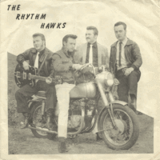

the Rhythm Hawks - the Rhythm Hawks (Album, 2009)
01 - Angel (2:50)
02 - Time To Jive (2:30)
03 - Nothin' Else To Lose (4:03)
04 - Long Long Gone (3:29)
05 - Working Man (3:00)
06 - Wonderful You (3:07)
07 - Best Shot (3:23)
08 - Ten Times A Day (3:26)
09 - S.T.Y.L.E. (3:16)
10 - Zodiac (2:00)
11 - Don't Look That Way (2:18)
12 - Doin' The Best I Can (2:30)
13 - No Chance (2:40)
14 - Christina (2:25)
15 - Clap Your Hands And Dance (2:34)
16 - Jump (3:13)
17 - Bop Tonight (2:10)
18 - Walk Out On You (2:20)
19 - She Likes To Rock (3:28)
20 - I Got A Girl (2:54)
© Nervous Records / Nervous Publishing :: [Digital] :: ℗ 2009 Nervous Records Cyf
Notes
Staffordshire, England, United Kingdom.
Compilation album of rock and roll band's recordings with 70s/80s sound
Ken Newbon - Lead vocals
Andy Dawson - Guitars, Backing vocals (lead vocals on track 01)
Tim Breward - Bass, Backing vocals
Billy Gibbons - Drums
Eddy Lane - Saxophone
Craig Gilligan - Saxophone
T. J. Butters - Piano
Kev Massey - Double bass
All tracks written-by or credited to Dawson/Breward
Their vinyl releases (1979, 1980, 1981) were on Redball Records [RR 011] and Hot Rock [HR45-004, HR45-009]
My experience is based on Digital release "the Rhythm Hawks" (2009, Nervous Records)
These recordings were all made in Redball Records' studio in Market Drayton, Shropshire (between 1979 and 1982)
reference information: Discogs® | Nervous Records
Review
142/366 (Project 366)
Pop rockin' and rollin' hot music with influences of Country Rock and Rockabilly Revival alongside with general hits around. Full of classic Rock and Roll with love songs, shakin' rhythms, twistin' melodies, boogie beats, jivers, ballads and strollers. Pretty sound of rocking and rolling jive evenings. Each song is so great for a dance. Some songs create the mood of city bars and town's night clubs, where rowdies can hang out. Fancy sounding sax is also quite perky. Unreleased songs before are in one mood of honky-a-tonk boogey rock. Some songs are classy 80's Rockabilly Rock'N'Roll. Actually, very bright recordings.